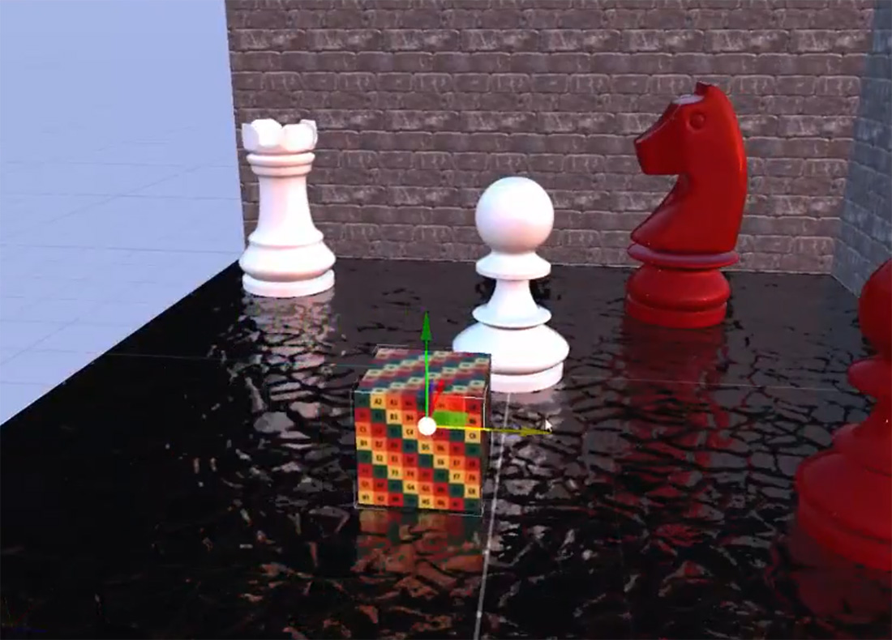

Screen Space Reflection (SSR)
Screen Space Reflections (SSR) effect adds real time local reflections to the object surfaces. This effect is in screen space, which means reflected can be only objects that are already on the screen. The effect uses the depth buffer to throw rays from object surfaces to calculate the reflection.

| Parameter | Description |
|---|---|
| Num. Rays | Number of rays per pixel. |
| Max. Reflection Distance | Maximum ray reflection distance |
| Refinement steps | After the ray hit detection, number of steps of the refinement hit algoritm. |
| Pixel Thickness | Helps to avoid depth shadow areas. |
| Max. Roughness | Maximun roughness value which the reflection will be calculated. |
| Intensity | Blend with original render. |
| Debug Mode Enable | Allows to check only the reflection output. |